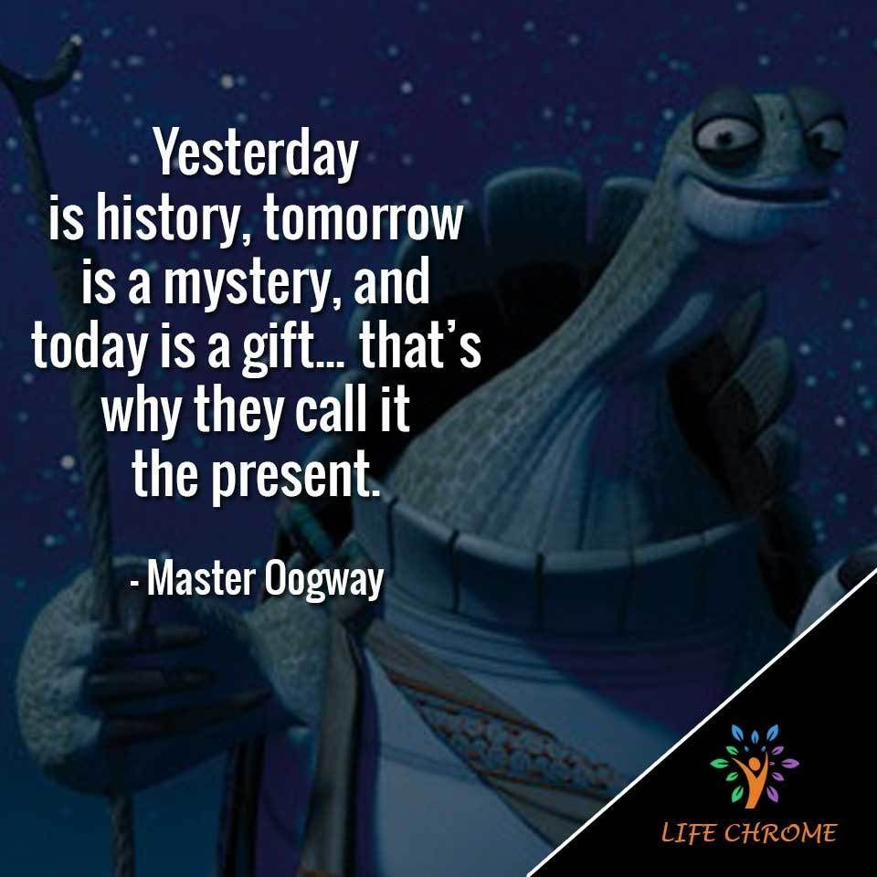

I started my first table tennis training when I was 9 years old. After a year, my coach decided to let me represent his table tennis club, and I started my table tennis career. As we can see, I have started my table tennis career for 10 years (I'm 19 now). In these 10 years, I have won some medals, and I will list down some of the prices that I won from 2017 until 2022. It is because I didn't record all awards in Microsoft Words in my whole career.
Medals in Competition
Photos that I played table tennis

Things that I inspired by Table Tennis
This is a quote that I always tell myself when I lose a competition:
"Yesterday is a history, tomorrow is a mystery, but today is a gift, that is why it's called the present." ~ Master Oogway.
Thanks for the character in KungFu Panda Master Oogway who always inspired me in everything.